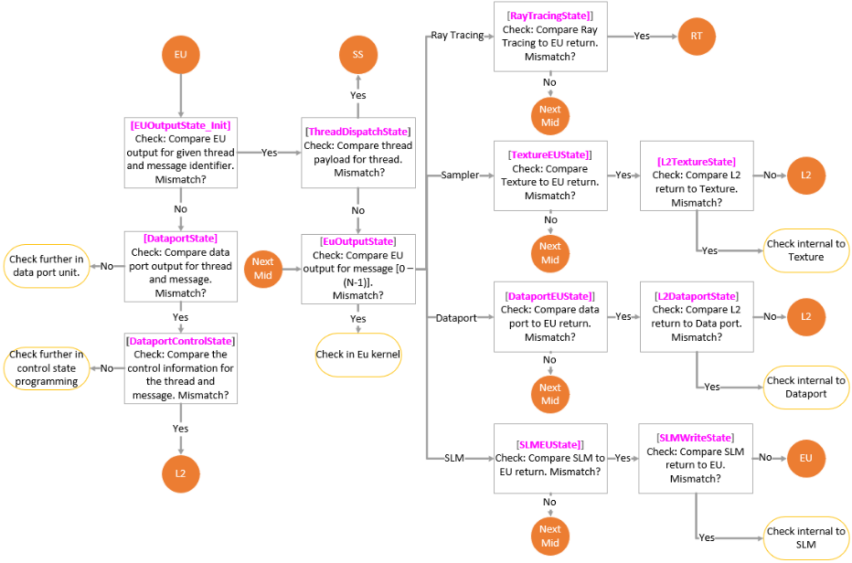
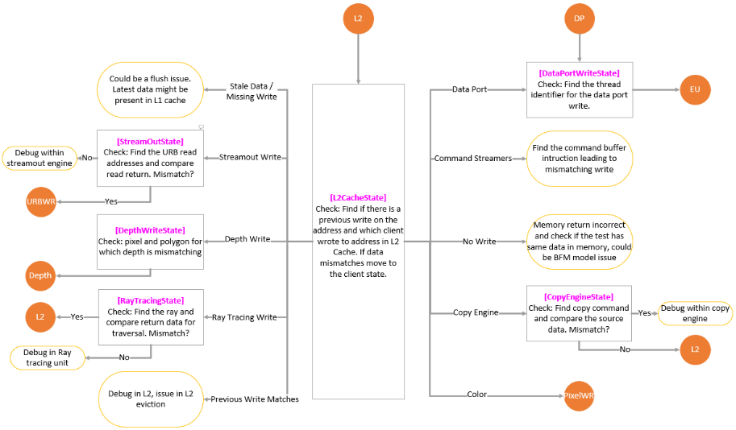

Automated Root-Cause Analysis of GPU Pipeline Corruptions in Graphics and Compute Workloads
图形与计算工作负载中GPU流水线数据损坏的自动化根因分析
简介
GPU图形与计算流水线中的数据corruption是设计验证与validation中最困难的调试问题之一，可能表现为像素mismatch、视觉伪影或错误计算结果，根源可能是硬件逻辑缺陷、竞争条件或驱动级软件bug，传统人工波形分析常需数天工程投入。论文提出Python实现的自动化根因分析框架ARGO：以golden reference run为基准，在RTL单元接口做系统性比对以定位首个数据mismatch，再通过镜像GPU流水线数据通路的接口决策树（FSM）沿数据依赖反向追踪，最终定位到具体transaction、硬件模块或软件编程问题。工具提供Pixel、Address、Compute三种运行模式，覆盖像素后端、EU、Thread Dispatch、URB、Texture、Dataport、SLM、L2等单元，并跨RTL仿真、emulation与post-silicon环境复用。生产环境案例表明其能精确、一致地识别corruption来源并显著缩短调试周转时间，但正文未给出量化数据。其"golden比对+接口级FSM回溯"模式对本团队存储/互连IP的调试自动化具有直接的方法学借鉴价值。
问题
GPU流水线数据corruption的根因定位极其耗时：问题可表现为像素mismatch、视觉伪影或错误计算结果，可能源自硬件逻辑缺陷、竞争条件（如缺失barrier、非法资源状态转换、cache coherency策略错误）或驱动级软件bug；单帧游戏画面或AI kernel可产生TB级trace数据，传统接口checker与人工波形分析低效且不可持续，往往需要数天才能隔离根因。论文目标是构建一个能从软件API命令追踪到低层RTL transaction、可跨RTL仿真/emulation/post-silicon环境的系统性自动化corruption根因定位框架。
方法
ARGO（Automated Root-Cause for GPU pipeline corruptions）为Python实现的自动化调试框架。关键技术手段：（1）golden reference run比对——在RTL单元接口对失败run与golden run做系统性数据比对，识别并定位首个mismatch；（2）接口决策树——以FSM状态镜像GPU流水线数据通路，每个流水线接口对应一个FSM状态，按mismatch出现位置沿数据依赖逐级回溯；（3）三种运行模式——Pixel Mode（按屏幕{X,Y}坐标追踪像素写入、blend读、color cache与L2）、Compute Mode（按dispatch逐线程/逐message比对EU输出、dataport与L2写回，并向前递推至更早dispatch）、Address Mode（从最终corruption地址出发在L2CacheState反查写入client）；（4）覆盖EU/Thread Dispatch/URB/Texture/Dataport/SLM/Rasterizer/Triangle Setup/Clipper/L2等单元，可区分硬件bug与control surface编程错误，并处理L1 hit/miss差异等特殊情况；（5）平台无关，同一框架适用于RTL仿真、emulation与post-silicon。
关键结果
未在论文中说明
创新点
区别于传统接口checker加人工波形分析的调试方式：ARGO将GPU流水线微架构知识显式编码为接口决策树/FSM，实现corruption的自动化逐级回溯而非人工分析；以golden reference run为基准在RTL单元接口自动比对，可定位到具体transaction、硬件模块乃至驱动/编程错误；同一框架跨RTL仿真、emulation与post-silicon复用，平台无关且可扩展。论文声称其设计原则可推广到其他大规模SoC调试环境。
团队参考意义
相关度级别：high
命中能力域：2.4 设计验证方法学 | 2.7 EDA/验证自动化与 AI 辅助
理由：直接命中2.4中的"bug triage与debug方法学"：ARGO是一套跨RTL仿真/emulation/post-silicon的自动化根因分析框架，其"golden run基准+单元接口自动比对+沿数据通路FSM式回溯"的工程模式，与本团队存储/互连IP验证中数据mismatch类bug（如LPDDR5X/HBM4读回数据错误、UCIe payload损坏）的定位痛点高度同构，且基于地址/事务ID的回溯天然适配存储子系统；其Python自动化框架属性同时命中2.7"验证流程自动化与脚本/框架"。需注意：工具为Intel专有且深度耦合GPU流水线微架构，团队可借鉴的是方法学与框架设计模式而非工具本身；论文对emulation仅作为部署环境提及，不构成对2.6仿真加速/Emulation方法学的直接贡献。
建议动作：深入精读并做内部分享
中文全文
Automated Root-Cause Analysis of GPU Pipeline Corruptions in Graphics and Compute Workloads
Pravesh Dangwal pravesh.dangwal@intel.com，Himanshu Somaiya himanshu.somaiya@intel.com
摘要：图形处理器（GPU）流水线中的数据损坏是 GPU 设计验证与确认中最困难的挑战之一。此类问题可能表现为像素不匹配、视觉伪影或错误的计算结果，其根源可能是硬件逻辑缺陷、竞争条件（race condition）或驱动层软件缺陷。传统调试方法依赖大量的人工分析与波形检查，往往需要数天的工程投入才能隔离根本原因。本文介绍一种内部自动化损坏根因分析框架，可加速寄存器传输级（RTL）仿真、硬件仿真（emulation）与流片后环境中的调试。该工具为专有工具，未对外公开。该工具利用黄金参考运行（golden reference run）在 RTL 单元接口处执行系统性比较，以识别并定位数据不匹配；随后跨流水线追踪数据依赖关系，从而精确定位导致损坏的具体事务、硬件模块或软件编程问题。所提出的方法提供了一种可扩展且与平台无关的调试解决方案，显著缩短了调试周转时间并减少了人力投入。来自真实 GPU 工作负载的案例研究表明，该框架能够精确且一致地识别损坏来源，从而在 GPU 验证过程中同时提升功能正确性与设计可靠性。
Introduction and Motivation
现代图形处理器（GPU）是当今最复杂的计算架构之一，为游戏中的高性能图形渲染以及人工智能（AI）和机器学习的大规模计算工作负载提供支持。渲染过程或基于 GPU 的通用计算是 GPU 硬件与图形驱动软件之间高度复杂的协作，涉及可编程着色器、固定功能单元以及软件管理的同步机制之间复杂的交互链条。
单个 GPU 集成了数百个紧密耦合的硬件知识产权（IP）模块，包括几何、光栅化、计算、拷贝和存储器子系统，它们在多条流水线上并发运行。这些流水线——3D、计算和拷贝——执行各自不同的任务，但经常共享资源并相互依赖彼此的输出，从而引入了错综复杂的相互依赖关系。
为了保持正确性，GPU 的运行依赖于显式同步机制，例如屏障（barrier）、信号量（semaphore）和栅栏（fence），以协调并发执行并避免竞态条件。此外，纹理和缓冲区等共享资源在跨流水线移动时，必须在有效的使用状态之间转换（例如，从拷贝目标转换为着色器资源）。任何错误配置——例如缺失屏障、无效的资源状态转换或不正确的缓存一致性策略——都可能导致隐蔽且间歇性的数据损坏。
单个游戏帧或 AI 内核可能产生数 TB 的跟踪数据，使得人工检查不可行。确定损坏的根本原因——无论是源于硬件逻辑缺陷、存储器错误还是驱动层软件缺陷——都需要对 GPU 微架构、驱动程序内部机制以及高级底层跟踪技术具备深入的专业知识，这使得该过程缓慢、成本高昂且容易出错。
GPU 损坏调试的关键挑战包括：
传统的接口检查器和人工波形检查对于调试如此庞大且并行的系统而言效率低下且不可持续。这些挑战凸显了对一种系统化、自动化调试框架的需求，该框架应能够跨完整的 GPU 流水线追踪数据损坏，从软件 API 命令一直到低层 RTL 事务。
Our Approach
我们提出 ARGO（ A utomated R oot-Cause for G PU pipeline c O rruptions，即 GPU 流水线损坏的自动化根因分析），这是一个用 Python 实现的自动化调试框架。ARGO 旨在：
Methodology
ARGO 实现了一个镜像 GPU 流水线数据通路的接口决策树。在该工具中，每个流水线接口对应一个有限状态机（FSM）状态。
Finite-State Framework and Modes of Operation
启动时，ARGO 进入 FSMInitState（图 1），并在该状态下确定运行模式。该工具支持三种模式：像素模式（Pixel Mode）、地址模式（Address Mode）和计算模式（Compute Mode），分别对应不同的测试平台类型和工作负载类别。尽管三者的进入条件各不相同，但它们都遵循统一的 FSM 框架，通过遍历接口级状态来回溯损坏源头。
Pixel Mode
在像素模式中，用户在比较故障运行与黄金运行（golden run）所生成的图像时，提供观察到损坏的 {X,Y} 屏幕空间坐标。ARGO 在 PixelFrontendState 中收集并比较针对该像素发生的所有写入操作。该状态对应输出合并（output merger）级的前端，在该流水线阶段，像素写入是按照实际渲染顺序排列的。如果在 PixelFrontEndState 处像素颜色值没有不匹配，工具将获取该像素更新的地址，并将该信息传递给 PixelBackendState。在 PixelBackendState，工具收集并比较针对所提供地址的所有事务。如果该地址的数据不匹配，工具将该地址传递给 PixelBlendRdState；否则，如果没有不匹配，则将该地址传递给 L2CacheState。在 PixelBlendRdState 中，针对该不匹配的写入，工具检查是否执行过任何混合读取（blend read），以及混合读取的数据是否匹配。如果没有混合读取，或者混合读取匹配而像素后端输出不匹配，则 ARGO 退出，向用户提供事务信息，并指出需要在像素后端单元中进一步调试。如果混合读取不匹配，工具会比较颜色缓存（color cache）中针对该缓存行（cacheline）的先前写入。如果先前写入匹配，且颜色缓存从 L2 读取的数据也匹配，则 ARGO 携带事务信息退出，并指出问题出在颜色缓存。如果从 L2 读取的数据不匹配，则 ARGO 将该地址传递给 L2CacheState。
Execution-Unit and Shared-Function Correlation
在 PixelFrontEndState 中，如果该像素的数据不匹配，工具将获取线程 1 标识符，并将其传递给 EUOutputState_Init（图 2）。在该状态中，工具查看执行单元（Execution Unit, EU）针对被识别线程的给定消息 2 的输出。如果给定线程该消息的执行单元输出不匹配，则工具转入 ThreadDispatchState 检查线程派发载荷（thread dispatch payload）。如果线程派发载荷没有不匹配，则工具转入 EUOutputState，从同一线程的第一条消息开始检查，一直检查到最初问题消息的消息计数为止。在 EUOutputState 中，ARGO 比较执行单元针对消息标识符 0（着色器程序的第一条消息）的输出，如果输出正常，则确定该消息所指向的是哪个共享功能（shared function）。如果这是一条纹理采样消息，则工具转入 TextureEUState。在此，工具判断纹理单元是否向执行单元返回了错误的采样值。如果返回的采样数据匹配，工具将消息计数递增并转到下一条消息。但如果纹理单元到 EU 的输出不匹配，则工具转入 L2TextureState，以判断纹理单元是否从内存/L2 接收到了正确的纹素（texel）值。如果 L2 向纹理单元的读取结果匹配，则 ARGO 退出，给出确切的线程，并指出需要在纹理单元中进一步调试。

对于其他共享功能，例如数据端口（Dataport，处理无类型和有类型的加载/存储）和光线追踪（Ray Tracing），也执行类似的操作。ARGO 持续递增该线程的消息计数，直到识别出向执行单元返回不匹配结果的消息。如果在某条消息处，执行单元发往共享功能的输出不匹配，则工具退出，并指出需要在 EU 程序中进一步检查。如果共享功能向执行单元返回了不匹配的数据，则 ARGO 转入 L2<SharedFunction>State，以确定 L2/内存是否向该共享功能提供了不匹配的数据。如果 L2 提供了正确的数据，则 ARGO 退出，指出问题出在共享功能中，并提供线程和消息信息。纹理、数据端口和光线追踪等共享功能包含 L1 缓存，当比较运行中出现 L1 命中与缺失不一致的情况时，需要对其进行特殊处理。共享本地内存 3（Shared Local Memory, SLM）是另一种共享功能，它没有 L2 作为后备，因此 ARGO 对其采用不同的处理方式。如果 SLM 对 EU 的响应不匹配，则 ARGO 转入 SLMWriteState，以确定线程块/线程组（Threadblock/Threadgroup）中的哪个线程更新了当前消息正在读取的地址。如果 SLM 写入匹配，则 ARGO 指出需要在 SLM 内部进一步调试。如果写入不匹配，则 ARGO 针对新的写入线程标识符转入 EUOutputState_Init。
在 EuOutputState_Init（图2）中，如果输出匹配，则工具携带线程和消息标识符进入 DataportState。在 DataportState 中，工具对传入的消息进行解码，以查找是否有任何与该消息相关联的控制面状态。如果该消息是有状态的，则工具会比较控制状态数据，若状态数据不匹配则退出，并指出控制面中存在编程问题。如果控制状态匹配，则工具会比较 DataportState 的输出。如果这是一条渲染目标写入消息且数据端口输出匹配，则工具退出并指出问题出在颜色管线中。如果数据端口输出不匹配，则无论消息类型如何，工具都会指出问题出在数据端口中。

L2 Cache Correlation and Client Resolution
在 L2 返回不匹配数据的情况下，ARGO 会转入 L2CacheState（图 3）。L2Cachestate 的输入是返回给客户端时出现不匹配的那个地址。L2 可以在虚拟地址域或物理地址域下工作。如果 L2 工作在物理空间，则需要额外执行一步虚拟地址到物理地址的转换。L2CacheState 的目标是确定先前写入同一地址的客户端。如果先前的写入不匹配，则 ARGO 会转入 L2 中导致该不匹配写入的客户端。有多个客户端可以向 L2 执行写入。下面列出了可以执行写入的客户端，以及工具针对每个客户端所采取的具体操作

Geometry and Raster Correlation
在线程分发负载在 ThreadDispatchState 处不匹配的情况下（图 2），工具会转到 ShaderState（图中为 SS，见图 4）。在这里，ARGO 会确定该分发是针对哪个着色器出现不匹配的。
对于基于几何的着色器（顶点着色器 Vertex Shader、外壳着色器 Hull Shader、域着色器 Domain Shader、几何着色器 Geometry Shader、放大着色器 Amplification Shader、网格着色器 Mesh Shader），工具会转到 URBReadState，在该状态中使用来自分发状态的线程标识符找到该线程正在读取的统一返回缓冲区（URB）地址。如果 URB 读数据匹配，则工具退出，指向 Thread Dispatch Unit 内部进行检查。如果 URB 读数据不匹配，则工具转到 URBWriteState。在这里，工具会找出哪个客户端正在对 URB 读地址执行最新写入。如果最新写入匹配，则工具退出，指向 URB 单元内部进一步检查。如果写入不匹配，则工具根据该客户端转到不同的状态。
对于像素着色器（Pixel Shader），工具会转到 PixelShaderState。在这里，工具会确定分发的不匹配发生在哪个阶段。共有 3 个阶段——重心数据、属性数据和常量数据。针对每个阶段的不匹配，工具会遵循如下所述的不同路径。
如果光栅器输出到早期深度测试的数据不匹配，则工具转到 RasterState。光栅器的功能是利用来自三角形设置功能的多边形数据，计算将被传入多边形覆盖的像素。如果来自三角形设置的传入多边形数据匹配，则工具退出，指向光栅器单元中的问题。如果传入数据不匹配，则工具转到 TriangleSetupState。三角形设置状态的功能是利用前一级图元装配阶段提供的屏幕空间中的三个顶点，为多边形（通常是三角形）的高效光栅化提供数据。在该状态中，工具会检查来自图元装配的输入对象，如果输入匹配，则工具退出，指向三角形设置中的问题。如果输入不匹配，则工具转到 ClipperState。在该状态中，执行图元装配和视锥体裁剪功能。裁剪器状态的输入是由先前几何阶段完成着色的顶点。在该状态中，工具会找出存储这三个顶点的 URB 地址。工具获取这些顶点的读返回数据，如果匹配，则工具退出，指向裁剪器单元中的问题。如果顶点返回数据不匹配，则工具转到 URBWriteState。

Compute Mode and Address Mode
If the workload is purely compute specific like AI/ML workloads, then ARGO follows a different approach. For such cases, the tool begins at FSMinitState and then moves to ComputeWriteState (Figure 1). Here the tool identifies the last compute dispatch call and compares the output of execution units for all threads generated by this dispatch. If any mismatch is observed for a thread, then ARGO moves to EUOutputState_Init passing the thread and message identifier. If no mismatch is observed for any thread, then ARGO moves to ComputeDataportWriteState. Here tool compares all the write data for all the threads of last dispatch call. If mismatch is seen, then the tool exits pointing to check further in dataport unit. If there is no mismatch, then tool moves to L2WriteState passing all the addresses that the threads from last dispatch call were updating. Here tool compares the output of L2 eviction and if mismatch is seen for a comparable address, then tool moves to L2CacheState passing the address to figure out which client wrote to this address earlier. If there is no mismatch observed in L2WriteState then the tool decrements the dispatch call identifier moving to the previous dispatch and moves to ComputeWriteState and the loop follows until it finds the mismatch. In the address mode, the testbench provides an address where the final corruption is observed. In this case, ARGO moves from FSMinitState to L2CacheState to figure out which client wrote to this address and thus move appropriately to the defined states.
Results
在量产 GPU 调试环境中部署 ARGO 已证明：
这些结果验证了 ARGO 是面向多样化工作负载与环境的可扩展 GPU 调试的重要框架。
Conclusion
调试 GPU 流水线损坏一直是 GPU 开发中最耗时、最消耗资源的环节之一。ARGO 引入了一种可扩展的自动化方法，将架构感知、针对性分析与跨平台适用性相结合。它能够将损坏隔离定位到精确的 RTL 接口与事务，同时大幅缩短周转时间，这代表了 GPU 验证方法学的一项进步。
ARGO 不仅加速了调试，还提升了工程效率，使团队能够以更快的上市时间交付更高质量的 GPU。其设计原则可广泛适用于其他大规模 SoC 调试环境，使 ARGO 成为硬件验证与确认领域的一项宝贵贡献。
Appendix
1 GPU 中的线程（Thread）是最小的执行单元，它在 GPU 的并行处理核心上独立运行着色器或计算程序。
2 着色器程序中的消息（Message）是指 GPU 核心（执行单元，Execution Unit）用来与存储器或任何其他专用共享功能单元（如纹理单元或加载存储缓存）进行通信的加载或存储指令。
3 共享本地存储器（Shared Local Memory）是 GPU 编程模型中同一工作组（workgroup）内的线程所共享的一种小容量、高速的片上存储器。
4 层次包围体（Bounding Volume Hierarchy）是一种树状数据结构，它将场景的几何体组织成嵌套的包围形状，有助于加速光线-三角形相交测试。
5 统一返回缓冲区（Unified Return Buffer）是图形流水线中不同阶段（如顶点着色器、曲面细化和几何着色器）用来高效共享数据的共享存储区域。